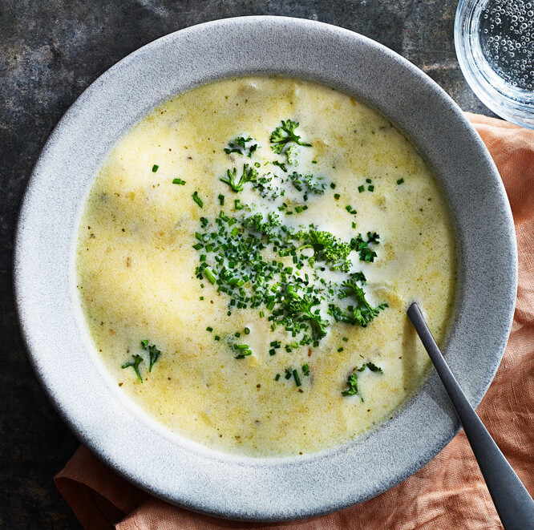

Melberts Recept

Purjolökssoppa
Ingredienser
- 600g potatis
- 1 purjolök
- 1 msk olja
- 1 tsk timjan
- 10 dl grönsaksbuljong
- 3 dl vispgrädde
- Salt och peppar
Steg
- Skala och skiva potatisen. Skölj,ansa och strimla purjolöken.
- Fräs purjolöken i oljan i en stor kastrull.
- Tillsätt potatis, timjan och buljong. Låt soppan koka ca 15 minuter.
- Använd en stavmixer och mixa soppan slät.
- Häll grädden i soppan och koka upp.
- Smaka av med salt och peppar.
- Servera gärna soppan med bröd, stekt bacon och hackad persilja.